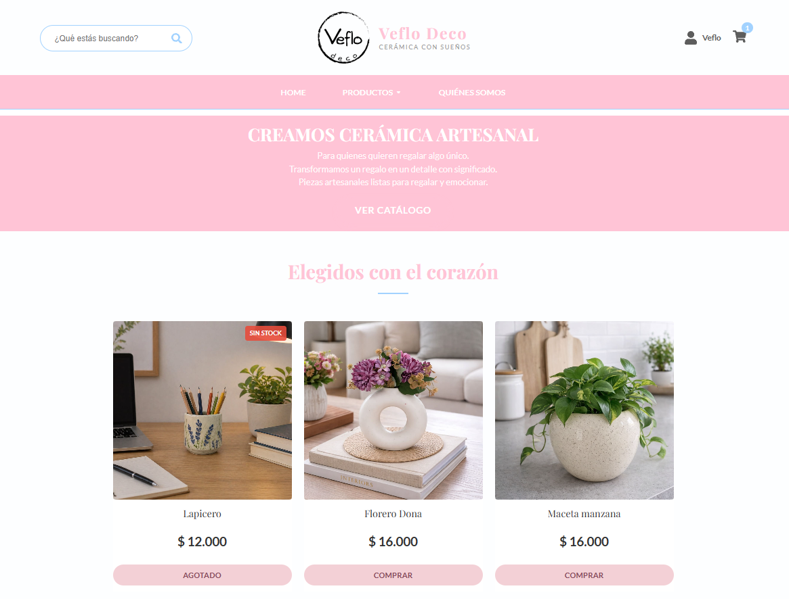
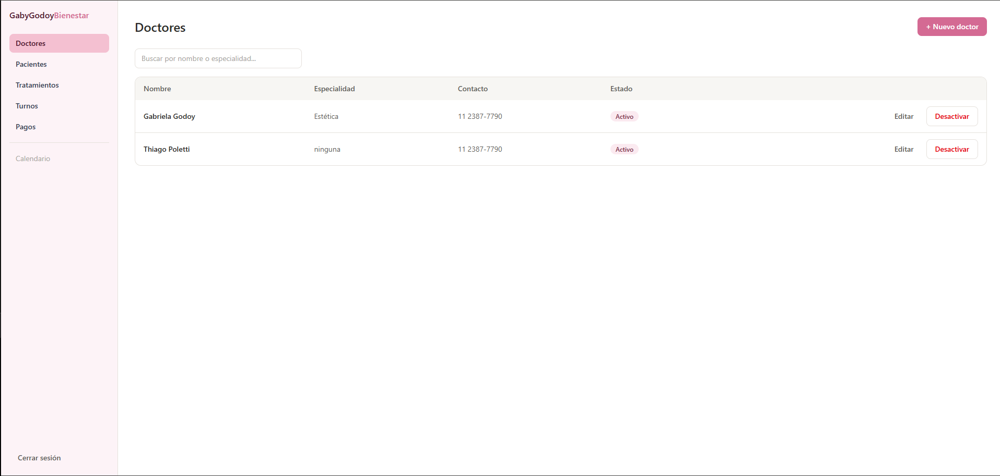
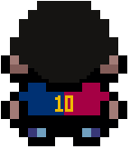
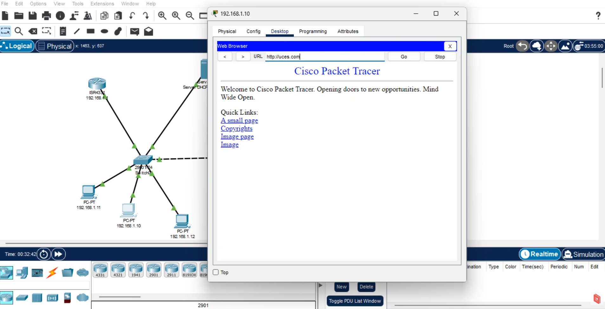

Hola, soy Thiago Poletti
Desarrollador Full Stack & Analista IT
Técnico Universitario en Programación graduado, con base sólida en lógica, algoritmos y bases de datos relacionales, y experiencia práctica en desarrollo Full Stack aplicada en proyectos propios (Veflo Deco, GGBienestar, Building). Busco un primer rol como desarrollador donde pueda seguir creciendo, aportando compromiso y capacidad de aprendizaje.
Mis Proyectos

Veflo Deco
Página web E-commerce completa. Cuenta con carrito de compras y panel de administración.
Building
Aplicación web (PWA) para seguimiento de entrenamientos. Registrá rutinas, series, pesos y visualizá tu progreso.

GGBienestar
Sistema de gestión de turnos para estética, incluyendo una sección dedicada al control de pagos.
VitalClinic API
Desarrollo de API REST para la gestión de turnos médicos integrando un sistema de base de datos relacional.


Infraestructura de Red
Diseño, implementación y configuración de una red corporativa simulada (LAN/WAN y enrutamiento) en Cisco Packet Tracer.
QA Testing - Igrowker
Planificación y ejecución de casos de prueba, reporte de bugs y documentación de calidad utilizando Jira y Excel.
Mis Habilidades
Desarrollo y Bases de Datos
QA Testing y Herramientas
Soporte y Sistemas Operativos
Redes
Metodologías e Idiomas
Experiencia Laboral
Soporte de Plataformas
Tercer Término SRL
- Gestión y administración de contenidos multimedia en plataformas (LMS/Video), asegurando la correcta carga, visualización y disponibilidad del servicio.
- Soporte Técnico Asociado: asistencia técnica a usuarios finales y clientes en el uso de las plataformas, diagnóstico de problemas de acceso, seguimiento de incidencias (Ticketing) y reporte de errores de integración (Bugs) utilizando Jira y Trello.
QA & Contenidos Multimedia e-Learning
Tercer Término SRL
- Desarrollo técnico de cursos interactivos mediante Articulate Storyline, gestionando la lógica de navegación y la resolución de errores técnicos en el despliegue de contenidos, para clientes como YPF y Aerolíneas Argentinas, asegurando la calidad de las entregas.
- Diagnóstico y corrección de fallos en la lógica de navegación, variables y triggers de simulaciones interactivas.